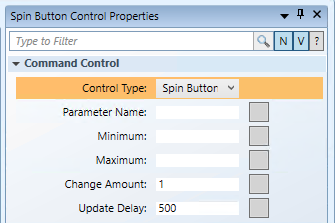

Configure the Spin Button Command Control Properties
Scenario
You want to configure the Command Control properties of a Spin button command control that allows you to increase or decrease the Present Value property of an Analog Output data point from within your graphic.
- You have completed the steps in Drawing a Spin Button Set.
- In the Element Tree view or on the canvas, select the Spin Button Control.
- In the Spin Button Control Properties view, expand the Command Control properties.

- In the Parameter Name field, type the data point’s Parameter name obtained from the Models & Functions Command Configuration table. This field is case–sensitive. For this example, type Value. This property will be the same Parameter property later defined in the Command and Navigation section.
- In the
- In the Maximum field, enter the highest acceptable value of your command.
- In the Change Amount field, enter the incremental amount of each change when the UP or DOWN arrow is selected.
- In the Update Delay field, leave the default value of 500 (milliseconds). This field displays the time, in milliseconds, that it will take to update the value from the last click the Spin button command control.